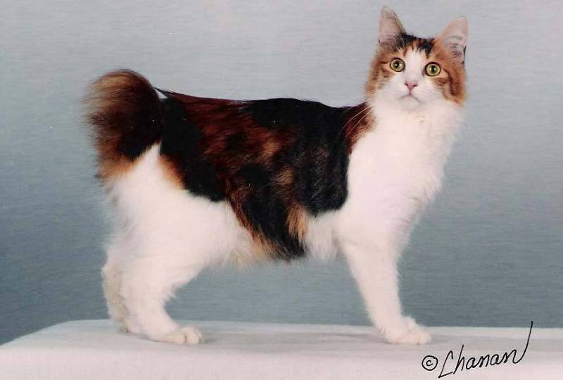
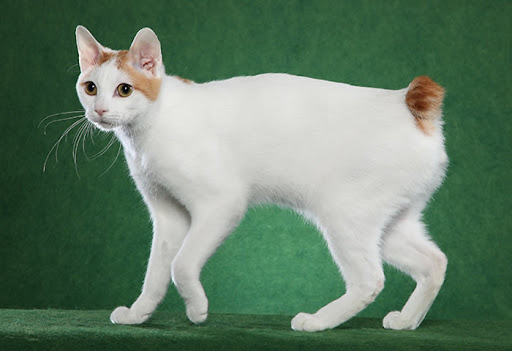
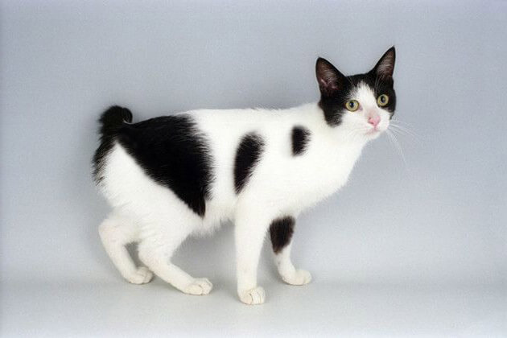
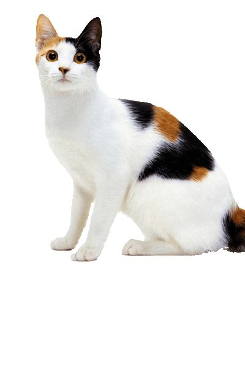

|
BRITISH SHORTHAIR
|
||
Personalidad |
Origen |
Mejores razas para los niños |
|
Los gatos británicos de pelo corto son los <gigantes bonachones> del mundo felino.
Son amables y cariñosos con los humanos y con los demás animales.
Los británicos de pelo corto no piden una atención humana constante y son
más tranquilos que sus congéneres orientales; además, tampoco comparten esa
naturaleza curiosa que lleva a muchas razas orientales a meterse en problemas.
|
País de origen: Gran Bretaña El gato británico de pelo corto es, con diferencia, la raza felina de pedigrí más conocida en el Reino Unido. Aunque solo hay registros escritos de la existencia del británico de pelo corto desde inicios de siglo, la raza se remonta cientos de años. Se exportó en grandes cantidades al Nuevo Mundo, donde se hizo muy popular. La diversidad de colores y dibujos en el pelaje que hay actualmente se debe a la reproducción selectiva de los mejores gatos callejeros durante el siglo XIX y a los cuidados planes de reproducción mantenidos hasta la actualidad. |
Aunque el gato británico de pelo corto no es de las razas que mejor se llevan con los niños,
todos los gatos son distintos y con una familiarización adecuada pueden convivir con ellos.
|
 |
|
 |
 |
 |
 |
Salud |
Nutrición |
Aseo |
|
Por lo general, los gatos británicos de pelo corto son una raza robusta sin demasiados problemas.
Por haberlos cruzado con persas en el pasado, hay una pequeña posibilidad de que sufran poliquistosis
renal. Esta enfermedad provoca problemas renales por los quistes u orificios que se desarrollan de
forma progresiva. Hay un test genético para esto, de modo que vale la pena preguntar a los criadores
por la condición de los gatos: los buenos criadores deberían conocerlo.
|
Cada gato es único y tiene sus propios gustos, aversiones y necesidades particulares en lo que respecta a la comida.
Sin embargo, los gatos son carnívoros y deben obtener 41 nutrientes diferentes y específicos de los alimentos
que ingieren. La proporción de estos nutrientes variará según la edad, el estilo de vida y la salud en
general, por lo que no sorprende que un gatito enérgico y en crecimiento necesite un equilibrio de
nutrientes diferente en su dieta que un gato senior menos activo.
Otras consideraciones que deben tenerse en cuenta son darle la cantidad adecuada de comida para mantener
el <estado corporal ideal> según las pautas de alimentación y atender las preferencias individuales por
lo que respecta a las recetas de comida seca o húmeda.
Como todas las razas, los siameses necesitan vacunación que los proteja de las enfermedades,
así como un control antiparasitario periódico y revisiones veterinarias anuales.
|
Uno de los motivos por los que el gato británico de pelo corto se ha vuelto tan popular durante el último siglo
es por los pocos cuidados que necesita. Su pelaje es corto y denso, por lo que puede cuidárselo fácilmente él solo.
Como con todos los gatos, se recomienda la vacunación regular y realizar un control antiparasitario.
|